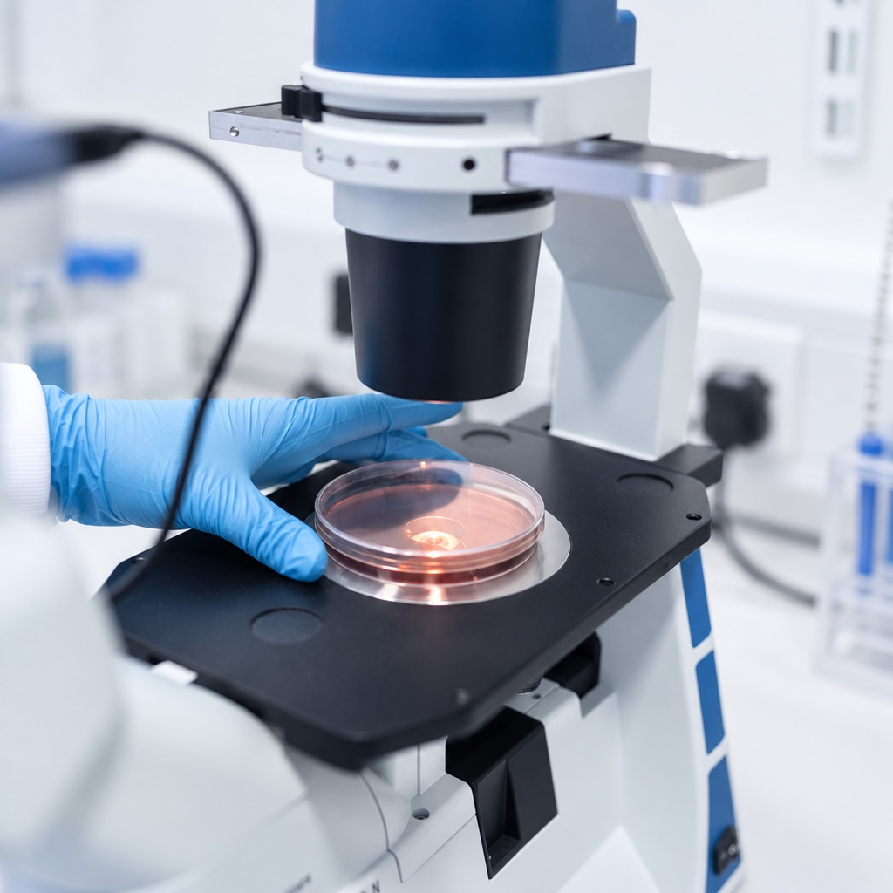
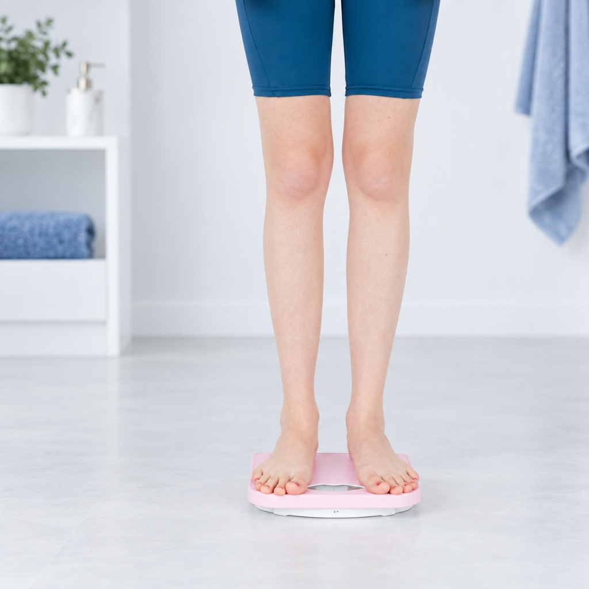

01 · Біологічний вік: чому він важливіший за дату народження
Фото: Mikhail Nilov / Pexels.02 · Ботокс, філери чи регенеративна медицина: у чому різниця?
Фото: MART PRODUCTION / Pexels.03 · Коли кремів уже недостатньо: як сучасна медицина підходить до збереження молодості
Фото: Ron Lach / Pexels.04 · Омолодження: чому сучасний підхід починається з діагностики
Ілюстрація: SmartCell.05 · Персоналізована медицина: чому універсальні поради більше не працюють
Фото: Cedric Fauntleroy / Pexels.
06 · Регенеративний потенціал: чому біологічний вік важливіший за паспортний
Фото: ThisIsEngineering / Pexels.07 · Сон - головна anti-age процедура, яку ми недооцінюємо
Фото: Miriam Alonso / Pexels.08 · Фібробласти шкіри: що це за клітини і чому від них залежить молодість
Фото: Tima Miroshnichenko / Pexels.09 · Чому після 35 років шкіра старіє швидше — і чи можна це змінити
Фото: Angela Roma / Pexels.10 · Чому після 40 років зникає енергія: п'ять причин, про які мало говорять
Фото: Andrea Piacquadio / Pexels.11 · Чому після 40 років організм відновлюється повільніше
Фото: Kampus Production / Pexels.